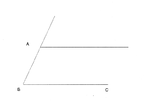
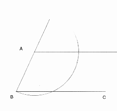
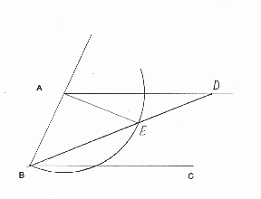
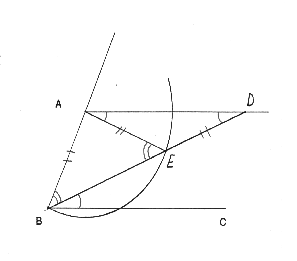
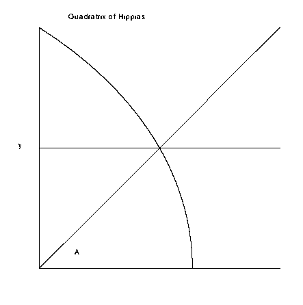
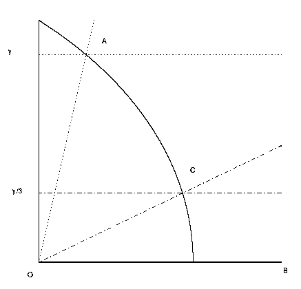
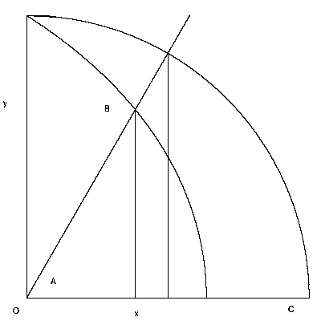

![[HOME]](angtri_files/home.gif) The Geometry Center Home Page
The Geometry Center Home Page
A few weeks ago I explained my job to a group of professors visiting the Geometry Center . I mentioned that I wrote articles on a newsgroup about geometry and that sometimes people write to me with geometry questions. For instance one person wrote asking whether it was possible to divide a line segment into any ratio, and also whether it was possible to trisect an angle. In response to the first question I explained how to find two-thirds of a line segment. I answered the second question by saying it was impossible to trisect an angle with a straightedge and a compass, and gave the person a reference to some modern algebra books as well as an article Evelyn Sander wrote about squaring the circle. One professor I told this story to replied by saying, "Bob it is possible to trisect an angle." Before I was able to respond to this shocking statement he added, "You just needed to use a MARKED straightedge and a compass." The professor was referring to Archimedes' construction for trisecting an angle with a marked straightedge and compass.
When someone mentions angle trisection I immediately think of trying to trisect an angle via a compass and straightedge. Because this is impossible I rule out any serious discussion of the manner. Maybe I'm the only one with this flaw in thinking, but I believe many mathematicians make this same serious mistake.
Why tell people it is impossible to trisect an angle via straightedge and compass? Instead we could say it is possible to trisect an angle, just not with a straightedge and a compass. When told that it is impossible to trisect an angle with a straightedge and compass people then often believe it is impossible to trisect an angle. I think this is a mistake and to rectify my previous error I will now give two methods for trisecting an angle. For both methods pictures are included that will hopefully illuminate the construction.
The first method, Archimedes' trisection of an angle using a marked straightedge has been described on the Geometry Forum before by John Conway. First take the angle to be trisected, angle ABC, and construct a line parallel to BC at point A.

Next use the compass to create a circle of radius AB centered at A.

Now comes the part where the marked straightedge is used. Mark on the straightedge the length between A and B. Take the straightedge and line it up so that one edge is fixed at the point B. Let D be the point of intersection between the line from A parallel to BC. Let E be the point on the newly named line BD that intersects with the circle. Move the marked straightedge until the line BD satisfies the condition AB = ED, that is adjust the marked straightedge until point E and point D coincide with the marks made on the straightedge.

Now that BD is found, the angle is trisected, that is 1/3*ANGLE ABC = ANGLE DBE. To see this is true let angle DBC = a. First of all since AD and BC are parallel, angle ADB = angle DBC = a. Since AE = DE, angle EAD = a, and so angle AED = Pi-2a. So angle AEB = 2a, and since AB = AE, angle ABE = 2a. Since angle ABE + angle DBC = angle ABC, and angle ABE = 2a, angle DBC = a. Thus angle ABC is trisected.

The next method does not use a marked ruler, but instead uses a curve called the Quadratrix of Hippias. This method not only allows one to trisect an angle, but enables one to partition an angle into any fraction desired by use of a special curve called the Quadratrix of Hippias. This curve can be made using a computer or graphing calculator and the idea for its construction is clever. Let A be an angle varying from 0 to Pi/2 and y=2*A/Pi. For instance when A = Pi/2, y=1, and when A=0, y=0. Plot the horizontal line y = 2*A/Pi and the angle A on the same graph. Then we will get an intersection point for each value of A from 0 to Pi/2.

This collection of intersection points is our curve, the Quadratrix of Hippias. We will now trisect the angle AOB. First find the point where the line AO intersects with the Quadratrix. The vertical coordinate of this point is our y value. Now compute y/3 (via a compass and straightedge construction if desired). Next draw a horizontal line of height y/3 on our graph, which gives us the point C. Drawing a line from C to O gives us the angle COB, an angle one third the size of angle AOB.

As I mentioned before this curve can be computed and plotted via a computer. The formula to find points on the curve is defined as x = y*cot(Pi*y/2). Yes here the vertical variable, y, is the independent variable, and the horizontal variable, x, is the dependent variable. So once the table of values is found, the coordinates will need to be flipped to correctly plot the Quadratrix.
Now a justification for the formula. In the following figure, B =(x,y) is a point on the Quadratrix of Hippias. Let BO be a line segment from the origin to B and and BOC be our angle A. If we draw in a unit circle, and drop a vertical line from the intersection of the angle we get similar triangles and see that sin(A)/cos(A) = y/x, or tan(A) = y/x. But earlier we defined a point (x,y) on the Quadratrix to satisfy y=2*A/Pi. So we get tan(Pi*y/2)=y/x or equivalently x = y*cot(Pi*y/2).

So we now have two different ways of trisecting an angle. I learned about the construction of the second method in Underwood Dudley's book: "A Budget of Trisections". In the book Dudley describes several other legitimate methods for trisecting an angle as well as compass and straightedge constructions that people have claimed trisect an angle. The book also contains entertaining excerpts of letters from these "angle trisectors".
Besides stating it is impossible to trisect an angle, I think other problems occur in discussing angle trisection. One difficulty is in explaining what it means for something to be impossible in a mathematical sense. I definitely remember in high school being told that it was impossible to trisect an angle. But I think at the time it meant the same thing to me as that it was impossible for me to drive a car. I was only 14 years old and I could not get a license to drive a car for another two years so it was just not possible AT THAT TIME. I do not remember being told that when something is impossible in mathematics, it was not possible five million years ago, it is not possible now, and it will never be possible in the future. Granted I may not have been ready for an explanation of mathematical logic and proof, but a statement like, "It is impossible to trisect an angle with a straightedge and a compass. This means it is no more possible to trisect an angle with those tools, then it is to add 1 and 2 and get 4" would have been much more powerful. (I am assuming here that we all count the same way: 1, 2, 3, 4, ...)
I did not intend to attack my high school teacher; I learned an incredible amount of mathematics from her as well as a deep love for the subject. Maybe my teacher did explain what the words "mathematically impossible" meant, and I just do not remember her comments. Regardless, I think a discussion of impossible in the mathematical sense would be an interesting and valuable topic to discover in high school. Are there any teachers out there who have spent time talking about mathematical impossibilities?
The Geometry Center Home Page
Comments to:
webmaster@www.geom.uiuc.edu
Created: April 12 1995 ---
Last modified: Jun 18 1996